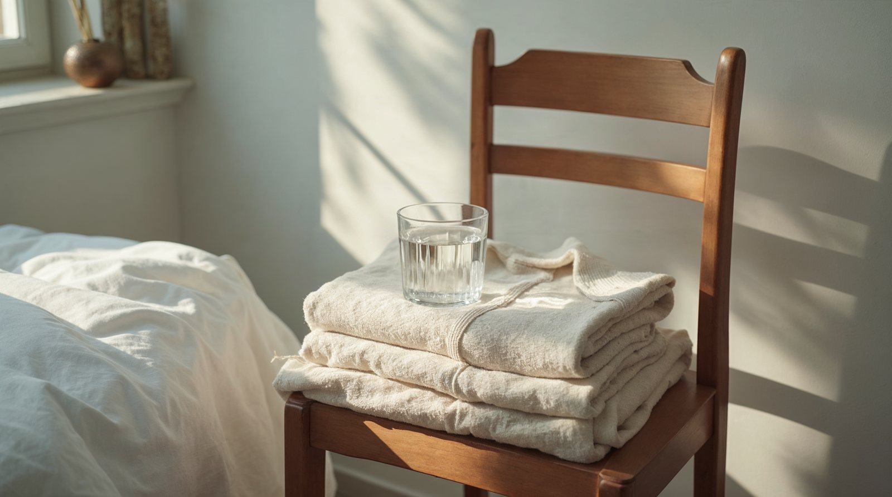
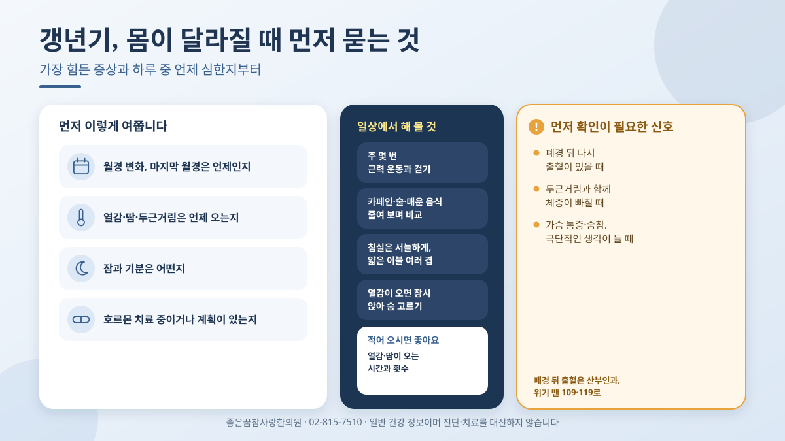

이종호 한의사 감수좋은꿈참사랑한의원 대표원장 (한의사 면허번호 19769)발행 2026-11-26 · 수정 2026-11-26
이 글의 차례
새벽 두 시, 목덜미부터 확 달아올라 이불을 걷어차고 눈을 뜹니다. 십 분쯤 지나 땀이 식으면 이번엔 으슬으슬해 다시 이불을 끌어당기지요. 갱년기에 몸이 달라졌다면 저는 열감과 땀, 잠, 기분, 관절 가운데 무엇이 가장 힘든지, 하루 중 언제 심한지부터 여쭙습니다.
그리고 이 증상들을 따로 떼지 않고 몸 전체의 리듬 안에서 함께 봅니다. 다만 폐경 뒤에 다시 피가 비치거나 생리가 아닌 때 출혈이 있다면 산부인과 진료가 먼저입니다. 가슴 통증이나 숨참이 있거나 갑자기 한쪽 팔다리에 힘이 빠진다면, 이 글을 읽기보다 가까운 응급실로 먼저 가세요.
이 무렵에는 내 몸만 바뀌지 않습니다. 아이는 입시를 치르거나 집을 떠나고, 부모님은 병원 갈 일이 잦아지고, 직장에서는 맡은 일이 무거워집니다. 다들 그렇게 지나간다는 말에 기대어 혼자 참아 오신 분을 진료실에서 참 많이 뵙습니다.
누군가를 챙기느라 정작 본인이 밤에 몇 번 깼는지 셀 겨를도 없이 지내신 분도 많지요. 그 몸으로 그동안 참 많은 일을 하셨습니다. 이제는 그 몸의 이야기를 차례대로 들어 볼 때입니다.
왜 이 시기에는 여러 증상이 한꺼번에 올까요
폐경은 생리가 1년 동안 없을 때를 말합니다. 대개 40대 후반에서 50대 초반에 찾아오고, 그 앞뒤 몇 년을 폐경 이행기, 흔히 갱년기라고 부릅니다. 이 기간에 난소에서 나오는 여성호르몬은 고르게 줄지 않고 오르내리며 줄어듭니다.
그래서 생리 주기가 짧아졌다 길어졌다 하고, 양이 많았다 적었다 합니다. 호르몬이 흔들리면 몸이 체온을 맞추는 폭도 좁아집니다. 조금만 더워도 몸이 서둘러 열을 내보내면서 얼굴과 목, 가슴이 확 달아오르고 땀이 쏟아지는 것이 열감입니다.
이 열감이 밤에 오면 잠이 끊깁니다. 잠이 끊긴 다음 날은 작은 일에도 예민해지고, 같은 통증도 더 크게 느껴지기 쉽습니다. 근육이 줄고 뼈가 약해지기 쉬운 때가 겹치니, 아침마다 손가락과 무릎이 뻣뻣하고 쉬어도 몸이 무겁다는 말씀이 이어지지요.
마음의 변화도 몸과 따로 오지 않습니다. 호르몬의 오르내림, 끊긴 잠, 자녀 독립이나 부모 돌봄 같은 생활의 변화가 한꺼번에 겹치니까요. 몸과 마음을 함께 본다는 것은 증상을 마음 탓으로 돌린다는 뜻이 아닙니다.
같은 열감도 잠을 못 잔 날, 소화가 안 되는 날, 마음이 무거운 날에 더 크게 느껴질 수 있습니다. 저는 그 흐름을 함께 보려고 잠과 식사, 기분을 같이 여쭙습니다.
한의원에서 저는 이 시기를 체온·소화·수면·배설, 몸이 보내는 네 가지 신호가 한꺼번에 흔들리는 때로 봅니다. 얼굴은 화끈거리는데 손발은 차다는 분이 많아 몸의 위아래 온기가 어떻게 나뉘는지도 살핍니다. 열은 위로 오르는데 아래는 식어 있는 모습이지요.
관절을 볼 때도 마찬가지입니다. 같은 무릎 시림이라도 맥과 몸의 상태에 따라 살피는 방향이 달라, 어디의 힘이 부족한지, 어디가 막혀 있는지, 잠과 소화는 어떤지를 함께 봅니다. 아침에 뻣뻣하다가 움직이면 풀리는지, 추운 날 더 심한지도 여쭙습니다.
비슷한 증상을 보이는 다른 원인도 있습니다. 갑상선 기능이 달라지면 두근거림과 땀, 체중 변화가 오고, 빈혈이나 심장 리듬 문제도 두근거림을 만듭니다. 그래서 두근거림이 잦다면 내과 검사로 먼저 확인해 두시길 권합니다.
그 순서는 갱년기 무렵 갑자기 가슴이 두근거릴 때는 어떻게 살피나요?에 따로 적어 두었습니다.
예를 들면 이런 경우입니다
어느 한 분의 이야기가 아니라, 진료실에서 자주 마주치는 모습을 몇 가지 그려 보겠습니다.
예를 들어 오후 회의 중에 갑자기 얼굴이 달아오르고 등에 땀이 배어, 발표하다 말고 겉옷을 벗게 되는 경우가 있습니다. 이런 분께는 열감이 오는 시각과 그 전에 마신 커피, 점심 메뉴, 전날 잠을 함께 여쭙습니다. 긴장하는 자리에서만 잦은지도 살핍니다.
예를 들어 밤에 땀으로 두세 번 깨고, 아침이면 손가락이 뻣뻣해 병뚜껑을 따기 힘들다는 분도 많습니다. 잠과 관절을 같이 보되, 관절이 붉게 붓고 열감이 있거나 여러 관절이 한꺼번에 아프다면 류마티스 질환 같은 원인부터 병원에서 확인하시도록 안내합니다.
밤에 땀으로 깨는 일이 가장 힘드시다면 갱년기에 밤마다 땀에 젖어 깨는 날이 많을 때는 어떻게 하나요?도 함께 읽어 보세요.
예를 들어 막내가 독립하고 부모님 간병이 시작되면서 입맛이 줄고, 텔레비전을 보다가도 눈물이 난다는 분도 계십니다. 이럴 때는 몸의 증상과 함께 마음 상태를 편하신 만큼 여쭙습니다. 기분이 가라앉은 날이 2주 넘게 거의 매일 이어진다면 정신건강의학과 상담도 함께 권합니다.
먼저 이렇게 여쭙니다
여러 증상이 겹쳐 있으면 어디서부터 말씀해야 할지 막막하시지요. 가장 힘든 것 하나부터 말씀해 주시면 나머지는 제가 하나씩 여쭙겠습니다.
- 마지막 생리는 언제였고, 주기와 양은 어떻게 달라졌나요?
- 열감과 땀은 하루에 몇 번, 언제 오나요? 밤에 땀으로 깨나요?
- 잠드는 데 얼마나 걸리고, 밤에 몇 번 깨나요?
- 기분이 가라앉거나 예민해지는 날이 일주일에 며칠쯤인가요?
- 아침에 손가락이나 무릎, 어깨가 뻣뻣한가요?
- 식사량과 대변, 체중은 어떻게 달라졌나요?
- 호르몬 치료를 받고 있거나 고민 중인가요? 드시는 약과 영양제는요?
스스로 점검해 보세요
- 하루에 여러 번 얼굴과 목, 가슴이 달아오르고 땀이 난다
- 밤에 땀이나 열감 때문에 두 번 이상 깬다
- 생리 주기가 들쭉날쭉해졌거나 양이 크게 달라졌다
- 얼굴은 화끈거리는데 손발은 차다
- 아침마다 손가락이나 무릎이 뻣뻣하다
- 작은 일에도 눈물이 나거나 화가 치밀어 스스로 놀란다
- 쉬어도 피곤하고, 예전에 즐기던 일이 재미없다
서너 가지가 겹친다면 그 겹친 자리부터 함께 보면 됩니다. 마지막 항목이 2주 넘게 이어지거나 스스로를 해칠 생각까지 든다면, 아래 '먼저 확인이 필요합니다'를 먼저 읽어 주세요.
호르몬 치료는 어떻게 생각하면 될까요
진료실에서 호르몬 치료를 받아도 되는지, 한의원 진료와 같이 해도 되는지 묻는 분이 많습니다. 호르몬 치료를 받을지는 산부인과에서 증상의 세기와 폐경 시기, 본인과 가족의 병력을 놓고 상의해 정하실 일입니다.
저는 그 결정을 대신하지 않고, 어느 한쪽으로 이끌지도 않습니다. 이미 받고 계시다면 약 이름과 시작한 날을 알려 주세요. 그 내용을 고려해 침이나 한약을 정하고, 호르몬제는 처방한 의사와 상의 없이 줄이거나 끊지 않습니다.
받지 않기로 하셨거나 아직 고민 중이셔도 괜찮습니다. 지금의 잠과 열감, 소화를 함께 살피면서 산부인과 상담 때 가져가실 기록을 같이 정리해 드릴 수 있습니다.

일상에서 먼저 해 볼 수 있는 것
몸이 하루의 흐름을 다시 기억하도록 돕는 것부터 시작합니다. 지키는 순서를 여쭤보시면 저는 먼저 잘 쉬고, 불편한 것은 미루지 않고 살피고, 그다음에 움직이시라고 말씀드립니다.
- 끼니 시간을 날마다 비슷하게 맞추고, 저녁은 잠들기 3시간 전쯤 가볍게 마치기
- 저녁에 20~30분 이야기 나눌 수 있을 만한 속도로 걷고, 일주일에 두세 번은 의자에서 천천히 일어났다 앉기
- 침실은 서늘하게, 이불은 얇은 것을 여러 겹, 머리맡에 물 한 잔과 갈아입을 잠옷 두기
- 커피·술·매운 음식을 먹은 날과 열감이 잦은 날을 견주어 보기
- 열감이 오르면 앉아서 천천히 들이쉬고 조금 길게 내쉬기(어지러우면 바로 멈추기)
- 잠들기 1~2시간 전 너무 뜨겁지 않은 물에 몸 담그기
따뜻한 물에 몸을 담그는 시간은 하루의 긴장을 내려놓는 신호로 쓰기 좋습니다. 다만 열감이 잦은 분은 물을 조금 미지근하게 하고, 나온 뒤 땀이 식을 때까지 앉아 쉬었다가 잠자리에 드세요.
갱년기에 살이 찐다며 끼니를 크게 줄이는 분이 있는데, 저는 말리는 편입니다. 근육이 적은 상태에서 굶으면 근육이 함께 빠질 수 있기 때문입니다. 끼니마다 단백질 반찬을 챙기고 조금씩 움직이는 쪽을 권합니다.
뼈도 이 무렵부터 챙기셔야 합니다. 골밀도 검사와 생활에서 챙길 것은 폐경 뒤 뼈 건강은 생활에서 무엇을 챙기면 좋을까요?에 정리해 두었습니다.
자녀 독립이나 퇴직처럼 생활이 크게 바뀌는 때에는 몸을 움직일 거리와 사람을 만날 일을 일부러 만들어 두시길 권합니다. 거창하지 않아도 됩니다. 매일 같은 시간에 걷기, 화분 돌보기처럼 작은 일이면 충분합니다.
한 번에 다 바꾸려 하지 않으셔도 됩니다. 사람은 생각보다 쉽게 낙담합니다. 못 지킨 날이 있어도 스스로를 탓하지 마시고, 다음 날 다시 하시면 됩니다.
한의원에서 함께 살필 수 있는 경우
- 열감과 식은땀 때문에 밤잠이 자주 끊기는 경우
- 얼굴은 달아오르는데 손발은 차고, 소화와 대변이 함께 흔들리는 경우
- 병원에서 염증성 관절 질환은 아니라고 들었지만 아침마다 관절이 뻣뻣하고 몸이 무거운 경우
- 기분이 자주 오르내리고 잠과 입맛이 함께 흔들리는 경우
- 호르몬 치료를 받으면서, 또는 받지 않기로 하고 생활 리듬을 함께 살피고 싶은 경우
처음 오시면 가장 힘든 증상과 마지막 생리, 받고 계신 치료와 드시는 약부터 확인합니다. 그다음 양손을 올려 달라고 말씀드립니다. 저는 처음 오신 분이든 다시 오신 분이든 모든 분께 맥을 짚습니다.
걸어오신 직후에는 맥이 달라지니 잠시 숨을 고르신 뒤에 짚습니다. 맥을 짚는 동안 잠과 식사, 대변을 여쭙고, 필요하다고 판단되면 혀와 배, 손발의 온기를 살핍니다.
체중과 근육이 걱정이시면 인바디 770으로 근육과 지방을 나누어 봅니다. 필요할 때는 원내 혈액 검사기나 당화혈색소 검사기로 기본 수치를 확인하되, 진단과 약은 해당 진료과에서 받으시도록 안내합니다.
그 뒤 침이나 한약 상담 가운데 지금 몸에 맞는 방법을 함께 정합니다. 한약은 대개 15일 정도 드신 뒤 반응을 듣고 이어 갈지 정하고, 원내에서 달이며 약재는 제가 직접 살핍니다.
제가 자주 드리는 말이 있습니다. "맥을 읽어 드리고, 약을 드신 뒤 반응을 보고, 다시 맥을 짚습니다. 그렇게 함께 걸어가는 치료입니다." 다시 오시면 지난번 가장 힘들다고 하신 증상부터 이어서 여쭙습니다.
진료받는 동안 덥거나 추우면 언제든 말씀해 주세요. 덮는 것과 자세를 그때그때 맞춰 드립니다.
이렇게 기록해 오시면 상담이 쉬워집니다
2주 정도만 적어 보셔도 어떤 날 더 힘든지가 보이기 시작합니다. 꼼꼼하지 않아도 됩니다.
- 열감과 땀이 온 시각과 횟수, 그 전에 먹은 것(커피, 술, 매운 음식)
- 잠든 시각, 밤에 깬 횟수와 이유(땀, 화장실, 생각)
- 마지막 생리일과 최근 몇 달의 주기·양
- 기분이 가라앉거나 예민했던 날 표시
- 건강검진 결과지(갑상선, 혈액, 골밀도)와 드시는 약·호르몬제·영양제 목록
같은 기록을 산부인과 상담 때도 가져가시면 이야기가 한결 수월해집니다. 저는 잘 적은 기록보다 꾸준히 적은 기록을 더 반깁니다.
이런 증상은 먼저 확인이 필요합니다
아래 경우는 한의원보다 산부인과 진료가 먼저입니다.
- 폐경 뒤(생리가 1년 넘게 없다가) 다시 피가 비치는 경우
- 생리가 아닌 때나 성관계 뒤에 출혈이 있거나, 생리량이 갑자기 많아지고 길어진 경우
- 마흔이 되기 전에 생리가 멎고 열감이 시작된 경우
이유 없이 체중이 줄면서 두근거림과 손 떨림, 더위를 심하게 타는 증상이 함께 있다면 내과에서 갑상선 확인을 먼저 받아 보세요.
다음 신호는 기다리면 안 됩니다.
- 가슴 통증, 심한 두근거림, 숨참이 있는 경우
- 갑자기 한쪽 얼굴이나 팔다리에 힘이 빠지거나 말이 어눌해지는 경우
이런 경우에는 한의원 진료를 기다리지 말고 가까운 응급실로 가세요. 우울이 깊어 스스로를 해칠 생각이 든다면 혼자 견디지 말고 바로 ☎ 109에 연락하세요.
호르몬제와 혈압약, 우울증 약을 비롯해 복용 중인 약은 처방한 의사와 상의 없이 줄이거나 끊지 않습니다.
이 시기를 지나는 몸은 고장 난 것이 아니라, 오래 해 온 방식을 바꾸는 중입니다. 그 사이 흔들리는 잠과 열감을 혼자 감당하지 않으셔도 됩니다. 다음에 오시면 지난 2주 동안 밤에 몇 번 깨셨는지, 그중 가장 힘들었던 밤이 어땠는지부터 여쭙겠습니다.

여쭙는 것
- 마지막 생리는 언제였고, 주기와 양은 어떻게 달라졌나요?
- 열감과 땀은 하루에 몇 번, 언제 오나요? 밤에 땀으로 깨나요?
- 잠드는 데 얼마나 걸리고, 밤에 몇 번 깨나요?
생활에서 해 볼 것
- 끼니 시간을 날마다 비슷하게 맞추고, 저녁은 잠들기 3시간 전쯤 가볍게 마치기
- 저녁에 20~30분 이야기 나눌 수 있을 만한 속도로 걷고, 일주일에 두세 번은 의…
- 침실은 서늘하게, 이불은 얇은 것을 여러 겹, 머리맡에 물 한 잔과 갈아입을 잠옷 두기
한의원에서 함께 살필 것
- 열감과 식은땀 때문에 밤잠이 자주 끊기는 경우
- 얼굴은 달아오르는데 손발은 차고, 소화와 대변이 함께 흔들리는 경우
- 병원에서 염증성 관절 질환은 아니라고 들었지만 아침마다 관절이 뻣뻣하고 몸이 무거운…
먼저 확인이 필요한 신호
- 폐경 뒤(생리가 1년 넘게 없다가) 다시 피가 비치는 경우
- 생리가 아닌 때나 성관계 뒤에 출혈이 있거나, 생리량이 갑자기 많아지고 길어진 경우
- 마흔이 되기 전에 생리가 멎고 열감이 시작된 경우
한눈에 보는 표
| 구분 | 핵심 |
|---|---|
| 여쭙는 것 | 마지막 생리는 언제였고, 주기와 양은 어떻게 달라졌나요? 열감과 땀은 하루에 몇 번, 언제 오나요? 밤에 땀으로 깨나요? |
| 생활에서 해 볼 것 | 끼니 시간을 날마다 비슷하게 맞추고, 저녁은 잠들기 3시간 전쯤 가볍게 마치기 저녁에 20~30분 이야기 나눌 수 있을 만한 속도로 걷고, 일주일에 두세 번은 의자에서 천천히 일어났다 앉기 |
| 한의원에서 함께 살필 것 | 열감과 식은땀 때문에 밤잠이 자주 끊기는 경우 얼굴은 달아오르는데 손발은 차고, 소화와 대변이 함께 흔들리는 경우 |
| 먼저 확인이 필요한 신호 | 폐경 뒤(생리가 1년 넘게 없다가) 다시 피가 비치는 경우 생리가 아닌 때나 성관계 뒤에 출혈이 있거나, 생리량이 갑자기 많아지고 길어진 경우 |
자주 묻는 질문
갱년기 증상은 언제까지 이어지나요?
사람마다 많이 다릅니다. 몇 달 만에 잦아드는 분도 있고 몇 년 이어지는 분도 있습니다. 언제 끝나느냐보다 지금 잠과 일상이 얼마나 흔들리는지를 기준으로 함께 살핍니다.
호르몬 치료와 한의원 진료를 같이 받아도 되나요?
받고 계신 치료와 약 이름을 알려 주시면 그 내용을 고려해 방법을 정합니다. 호르몬 치료를 시작하거나 멈출지는 산부인과에서 상의해 주세요.
갱년기에는 보약부터 먹어야 하나요?
보약보다 진맥과 상담이 먼저입니다. 피곤함이 잠에서 왔는지, 소화에서 왔는지, 마음에서 왔는지에 따라 살필 것이 달라, 맥과 생활을 본 뒤 한약이 맞는지부터 말씀드립니다.
살이 찌고 근육이 빠지는 것 같아요.
이 시기에 체성분이 달라지는 분이 많습니다. 필요하다고 판단되면 인바디 770으로 근육과 지방을 나누어 보고, 몇 주 간격으로 같은 조건에서 다시 재어 흐름을 봅니다.
좋은꿈참사랑한의원은 재진 때 지난번 이야기부터 이어서 여쭙니다. 진료시간과 예약은 오시는 길에서 확인하세요.
어디서 상담받을 수 있나요?
좋은꿈참사랑한의원은 서울 동작구 만양로2길 2 신성빌딩 3층·5층(서울 동작구 상도동, 7호선 상도역 3번 출구 근처)에 있습니다. 한의사 3명(이종호 대표원장, 조영기 수석진료원장, 정원영 진료원장)이 진료합니다. 진료시간은 평일 09:30~20:00(점심 13:00~14:00), 토·일·공휴일 09:30~15:00이며, 방문 전 전화로 확인을 권합니다. 예약은 네이버 예약, 카카오톡 상담, 전화 02-815-7510로 받습니다.
이 글은 일반적인 건강 정보이며 개인의 진단이나 치료를 대신하지 않습니다. 증상이 있거나 복용 중인 약이 있다면 진료를 통해 확인하세요. 치료 효과는 개인마다 다를 수 있습니다.
작성 기준: 일반적으로 알려져 있는 건강 정보를 참고해 정리했습니다(대표원장 감수). 증상 기록은 1~2주 동안 하루 1회, 비슷한 시간에 적어 오시면 지난 상태와 비교하기 쉽습니다.